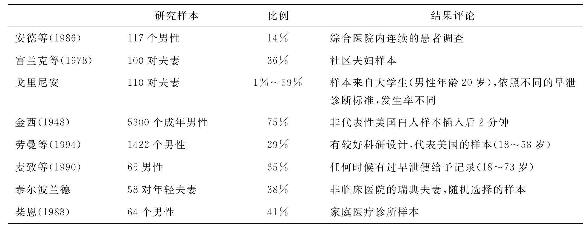

射精是和许多神经生理过程相关的，整个射精过程可以用四个英文单词来表达：Excitation（兴奋）；Erection（勃起）；Emission（泌精）；Ejaculation（射精），四个英文单词的第一个字母都是E，简写为4E。性兴奋是性行为的起始阶段，也是性反应周期的第一个期，性兴奋期自然出现明显的阴茎勃起。勃起是指引起阴茎膨胀和增加硬度的神经和血流动力学活动过程，主要由来自骶部（盆腔内脏神经或勃起神经）的副交感神经控制。泌精（emission）是指从前列腺、精囊、输精管收集并且传运到尿道而准备射精的过程，这些综合的分泌物称为精液。伴随着膀胱颈部和远端的尿道括约肌的收缩和关闭，进入后尿道和精阜的精液形成一个压力池。射精是迫使精液通过尿道排出体外的过程。性高潮是与射精有关的主观体验，被认为是大脑皮层的感受。虽然泌精、射精和性高潮是一个整体过程，但由于不同的神经生理学机制的临床证据表明，勃起并不一定需要射精，而射精也不一定需要有性高潮，但射精的神经生理学机制还没有完全明了。另外，研究表明多巴胺系统促进射精而五羟色胺系统抑制射精。目前广泛接受的观点是：男性射精器官的神经分布包括体神经，主要是阴部神经和它的分支（一种感觉和运动混合的神经），以及自主神经系统的两个分支。副交感自主神经的分支主要负责勃起功能，而交感神经和体神经的分支主要负责溢精和射精。在性活动时，感觉刺激从生殖器通过阴部神经的感觉分支（一条体神经）传到骶丛，再从骶丛传到脊索。当冲动传导到脊索之后，这些神经冲动刺激脊索水平的神经反射，并进一步向脑部的高级中枢传导。虽然大脑射精中枢的准确部位还没有确定，但下丘脑被认为起到重要作用。在适当地整合和翻译信息之后，大脑不是扩大就是抑制这种反应，大脑的这些中枢就返回一个传出信息冲动到下丘脑、脑干和脊索的中间和外侧束到交感链，在胸10和腰3传出神经节段部位发生突触活动。神经冲动从这里通过上腹下丛和下腹神经到突触并对附近器官的肾上腺素神经元传递冲动，这些器官包括精囊、输精管、前列腺和男性射精系统的其他部分。从这个第二级传出神经元来的神经冲动通过神经通道继续刺激输精管、精囊、前列腺、膀胱颈并引起泌精。到膀胱颈部的交感神经分布引起射精时的膀胱颈部的高度闭锁而防止逆行射精。同时，来自高级中枢或通过脊索反射的神经冲动通过骶尾膀胱部位并且通过体神经的运动支来刺激会阴部的横纹肌产生射精时典型的节律性收缩。这些肌肉包括球海绵体肌、坐骨海绵体肌、耻骨尾骨肌。
虽然关于早泄的理论有多种，但是几乎没有一种有关于病因的对照组的研究。一些推断来自于生活的、心理的和医学的观察。例如，一些人根据金西博士的调查，即75%的男性有PE，因此认为PE是正常的，从生理学上可以说是根源于人类的进化。也有人根据简单的联系提出病因，例如根据性交的频率越低，越容易发生PE，因此认为早泄是性交频率过低所致。然而斯特拉思勃格等认为性生活的逃避是早泄造成的结果，而不是早泄的病因。尽管目前的资料还不完全一致，但越来越多的资料表明多种原发性和终生性早泄的病例是有生理学、神经病学和素质反射方面的生物学病因的。正如前面提到的，多种研究表明：早泄的男性和无早泄的男性球海绵体肌的反射是不同的，早泄的男性球海绵体肌的反射更快，这也使一些人推论患有早泄的人比无早泄的人在生物学上具有更加明显的阴茎敏感性。
神经药理学根据药理学模式提出了可能的早泄机制和治疗方法。凯特尼和赛路波发现三氟拉嗪和某些麻醉剂，如阿片戒断时可能出现早泄，但机制目前不清楚。其他如盐酸假麻黄硷、硫酸麻黄硷和盐酸去甲麻黄硷都被说成是能够改善由于增加副交感神经活动而导致的射精迟钝或抑制的药物。能够延迟射精的药物可以分为三类：多巴胺拮抗剂、抗抑郁剂和β- 氨基丁酸（JABA）增效剂。
这是一组能够阻断中枢多巴胺受体的药物，通常称为神经松弛剂或抗精神病药。通过阻断中枢多巴胺受体可以防止早泄。多巴胺拮抗剂表明了对人类抑或动物的特殊的抑制射精作用，这包括哌咪清、胃复安、舒必利、氟哌啶醇和强力催产素拮抗剂vasotocin。
另一类被认为能够延迟射精的药物是抗抑郁剂，这类药物能够提高五羟色胺的水平。新的非典型性药物包括氟西汀、色曲啉、帕罗西汀、氟伏草胺和顽发克星。这些药物有很弱的抗组织胺作用，通过阻断五羟色胺的回收而提高五羟色胺的水平。五羟色胺水平的升高被认为是抑制射精的机制之一。
许多苯二氮 类药物对治疗广泛性焦虑和惊恐发作有效，同时也发现对某些男性有抑制射精的作用，推断其机制为提高β-氨基丁酸（GABA）。这些药物包括利眠宁、氯羟安定和阿普唑仑。然而抑制射精的作用没有五羟色胺回收阻断剂那么明显和广泛。对照研究表明，服用抗焦虑剂引起射精抑制的病例小于10%。一项有安慰剂对照的女性服用安定的研究表明，其存在明显的与剂量相关的性唤起和性高潮抑制。
许多研究表明，苯氧苄胺（降压药）可以抑制射精。在开始剂量从每天10mg到30mg的增加过程中，苯氧苄胺是强有力的α-肾上腺素能阻断剂，目前认为抑制射精的机理是干扰了射精反射的交感神经活动。射精也许不只受到交感神经控制，还受到交感神经和副交感神经的调节，交感神经负责精液进入后尿道的泌精过程，而副交感神经主管最后的射精。西龙·帕泽德·厚牟奈的发现支持上述双重调节的理论，即苯氧苄胺废止了精液排出，使其进入后尿道，并且延迟射精，而患者能够体验射精的感觉（性高潮）。这是一种无精液射出的干性性高潮。一些报告也提到典型的麻醉剂可以通过减少感觉而抑制射精，如乙基氨基苯甲酸盐和地布卡因（3%溶液）。其他受益的报告来自颠茄止血素、一溴樟脑、左旋多巴、盐酸罂粟碱。
尽管任何推论都是暂时的，但药理学研究表明，一些机制在射精过程中还是起到了重要作用：1）起到中枢神经系统多巴胺受体阻断作用的神经松弛剂或抗精神病药能够抑制射精；2）通过阻断五羟色胺的回收提高五羟色胺的水平能够抑制射精。然而，某些轶事性的报告表明偶然的情况之下五羟色胺回收阻断剂能够引起自发的性高潮。3）具有抗胆碱能作用和α-肾上腺素能受体拮抗作用的三环类抗抑郁剂能够通过阻断五羟色胺和去甲肾上腺素的回收而提高其水平，起到抑制射精使用。4）使用提高β-氨基丁酸水平的抗焦虑剂，如苯二氮 类能够轻度地抑制射精，这种作用与药物剂量明显相关。5）通过α-肾上腺素能受体阻断剂干扰射精反射弧的副交感神经而抑制射精，如可以用苯苄胺α阻断来解释这一发现。射精过程是多种因素决定的，既受交感神经又受到副交感神经的调节。然而，药理学的研究仅提供一些线索：1）脑以及周围神经系统是起作用的；2）许多神经病学机制在射精过程中是有意义的，如果是这样，多种早泄在生理学上应该是存在的，每一种都受到不同的生理化学机制的调节。
医学文献强调早泄的生理学、神经病学、药理学和泌尿外科学的病因，而心理学文献则提出早泄病史、各种因素相互作用、行为和心理社会学的解释。然而，许多心理学解释依赖于病例印象，而不是科学的依据。精神分析将早泄归因于广泛性焦虑、阉割焦虑、被动侵犯的人格障碍、自恋、对女性的无意识情感。然而卡普兰明确地驳斥了这种观点，认为在早泄中根本不存在这种神经症的特点。按照圣劳伦斯和玛达卡期拉的观点，没有对照研究支持精神动力学的可靠性。格式塔的观点强调早泄是伴侣之间缺乏相互了解的结果。横向的和其他人际关系的解释指出：具有破坏性的相互影响的模式在性交过程中孕育了无意识的力量，导致男性快速射精。这种假设受到一般临床病例的挑战，因为婚姻关系的改善并不一定能够带来性功能的改善，同时也缺乏对照科研的支持。行为科学的方法无论在早泄的病因还是治疗方面都已取得了实质性的进步。行为治疗家坚持早泄的病因是原发性焦虑，它可以缩短射精的潜伏期。例如沃尔佩（wolpe）提出早泄可能是焦虑的结果，因为早泄和焦虑都是由交感神经调节的。一些研究使个体心理因素与性功能联系起来，与早泄关系最密切的心理因素是焦虑和抑郁，尽管焦虑和抑郁都已被认为是性功能障碍的起始原因，但它们通常也被作为结果发生。因此，确定因果关系是复杂和困难的。作为一般的规律，临床医师往往将严重的焦虑和抑郁看成是病因，而将轻微的焦虑和抑郁看成是性生活失败的结果。而在多数心理学家的印象中，主要的病因仍然是焦虑，只是还缺乏具有对照研究的结果支持。事实上，考克考特等认为焦虑将影响男性性唤起的主观和客观评价之间的相互关系，发现早泄患者比患有勃起障碍的患者这些评价之间的联系更加密切：缺乏自尊、受到挫折、感到内疚、疑病观念、性交恐怖、敌意与愤怒、非现实的愿望和完美主义、内心冲突（例如悲伤、没有解决的性别定向、担心变态的性唤起方式等）以及严重的精神病理学问题都有可能造成早泄。在具有心理测量的有对照组的早泄研究中，使用明尼苏达多项人格测验，症状检查量表（SCL-90-R）已经产生混合的，有时是矛盾的结果。法甘等发现有性功能障碍的男性有正常的心理功能，许多其他的研究没有能够提供有力的论据来支持操作性焦虑或人际关系冲突与早泄之间的联系。另一方面，在对比研究具有不同性功能障碍的男性时发现具有早泄的男性有精神病理学性质（但是没有急性的临床表现），而其他患者则没有。一些研究表明早泄患者比没有早泄的其他性功能障碍的患者和正常人更容易焦虑，早泄的男性比没有早泄的其他性功能障碍者在抑郁和躯体化量表评定时分数为低，而在敌意和社会隔离方面的得分较高。另一些研究表明患有早泄的患者比患有勃起障碍的患者更健康。在一项最近使用的MMPI-2临床量表的研究中，麦耶斯发现量表分数在正常范围，而且在30个早泄患者，35个勃起障碍患者和25个性欲低下的患者之间没有显著性差异。
最常见的有关早泄的因果关系由那些治疗早泄的临床医师提出，他们虽然没有严格的科学的对照观察，但近几十年来却得到普遍的接受。例如，早泄者往往是因为性生理知识的缺乏和性技巧的不足，对性行为过于理想化，不能处理性刺激或性交困难。马斯特思和约翰逊将早泄归因于对性交过程特定的焦虑（称为操作性焦虑）和在情感、认知方面的双重压力，这种压力导致男性将自己从性行为的相互作用中分离出来，如同他本人对自己的性行为进行自我批评，同时他们还坚持早泄是在引起快速射精的具体情况下的条件反射和经验学习的结果，如仓促的第一次性交，与妓女性交或缺乏亲昵的性交。其他学者也非常强调条件反射，早期的性交失败（经常是第一次性交），长期的性行为不连贯，反对学习性技巧和对性持否定态度都可能成为早泄的病因。有了这些特点，一种快速射精的模式就成了男性的一种习惯。
始终存在争议的是手淫与早泄之间的关系，临床医师提出手淫可以使射精时间条件化，男性手淫时往往出于紧张，担心被人发现，以及内疚心理等而反复快速地射精，时间久了形成快速射精的状态，也就是早泄。但是一些人同样有手淫，他们不出现早泄，反而出现射精延迟，性交后还要手淫才能射精，医师的解释是因为手淫使射精的阈值提高，正常的性交刺激达不到手淫的刺激强度，还要靠手淫才能射精，因此发生射精延迟。而有一些男性从来没有手淫，也出现早泄，看来早泄与手淫有关的条件反射论仍然不是唯一的解释。
其他能够在临床上观察到的早泄的特点还有男性的内疚感和羞耻感，对性行为期望过高，严格的宗教观念，来源于女性性交要求的操作性焦虑，理智性的保护（如否认性唤起和快感的独立存在），性别定向问题以及具有冲突性质的亲子关系等。引起早泄的非心理特征包括性交频率过低，性刺激的质量问题，性伴侣的否定态度。临床医师还注意到性的因素和人际关系因素经常相互作用，人际关系问题可以引起早泄，而躯体和心理的问题可以加剧人际关系的紧张，两种因素相互作用或独立存在。
另外需要注意的是，性功能问题和婚姻问题之间没有严格的区别。一些有明显婚姻问题的夫妇可能有满意的性生活，而没有满意性生活的夫妇也可能有良好的婚姻关系。引起早泄的最常见的人际关系因素来源于对婚姻的不满、意见不一或冲突，这在继发性早泄更为明显。认为早泄是来源于对人际关系不满的理论根植于许多特性，如缺乏交流，非现实的婚姻期望（例如相信性是完美的或冲突是不好的），不能建设性地解决冲突问题，误信对方，害怕解决冲突问题，父母的不良婚姻模式影响到自己的婚姻，家庭系统的压力（照管伴侣的老年父母或学龄前儿童），性角色冲突，变异的性爱好或性价值观，职业问题，引起人际关系紧张的其他实质性问题。不幸的是这些理论缺乏科学的对照研究支持。很明显，许多早泄的男性有一个同时具有性功能障碍的伴侣。通常这些妇女的性唤起受抑制，由于丈夫有早泄而失去了许多性交的机会，而其他妇女只是难以达到性高潮。相反，继发性的早泄可能是对女性性唤起受抑制，性高潮受抑制，性交困难的反应。对某些夫妇而言，要辨认最初的起因即使并非不可能，也是非常困难的，因为许多情况下各种因素是相互影响，相互作用的。总之，文献揭示许多生理因素可以引起原发性或继发性早泄，没有什么心理学的现象或心理社会特点是永恒不变的。
目前有关早泄病因的理论倾向于将心理和器质的因素结合起来。尽管到目前为止还没有一种病因学理论得到广泛的认可，但人们认为心理因素加剧或恶化了潜在的器质性因素。原发性和继发性早泄可能有不同的病因。
早泄的心理因素包括性行为的条件化，焦虑也起到举足轻重的作用。当自主神经系统在射精过程中起到重要作用的时候，焦虑增加了交感神经的活动。在增加交感神经活动和降低射精阈值之间存在一个plausible的生理联接。然而，男性的射精问题与焦虑之间的关系还没有得到真正的证明。有学者认为焦虑更可能是早泄的结果而不是早泄的原因。
支持早泄器质性病因的依据是发现早泄有遗传性。Schapiro在1943年就报告早泄有家族的素质。最近Waldinger等报告射精潜伏期小于1分钟的早泄者的一级亲属中，14人中有10人患有早泄。根据遗传因素以及中枢神经系统5-HT功能紊乱，Waldinger推论早泄就是代表了人口射精潜伏期分布的一个时点。早泄的病因主要是以遗传素质为基础的，尽管认知和情绪也影响着这些原有的缺陷，但心理紊乱与早泄的关系是继发性的现象。然而，这种早泄的遗传素质理论也可以巩固其他早泄的器质性理论，包括阴茎的敏感性增强，射精反射弧过度兴奋，中枢5-HT受体过度敏感。
尽管已经存在多种多样有关早泄的病因学理论，但并没有一种理论能够让学者们完全信服，而且随着有关早泄诊断标准的放宽，尤其是参考女性的性生活满意度之后，早泄的比例已经上升到30%左右，那么就有一个非常重要的问题浮现出来，我们社会上有近三分之一的男性是性功能障碍吗？这么多的早泄患者会是一种病因吗？自然答案是否定的。对于严重的素质型早泄可能有比较一致的病因，素质型的遗传学病因尤其值得重视。而针对不能让配偶达到性高潮的不严重的早泄，本人提出错配的病因学理论，尤其适用于那些射精潜伏期多于三分钟以上的男性。男性射精潜伏期有短有长，女性的性高潮潜伏期也有短有长，那么，我们所谓的早泄，其中一部分就是男性射精过快与女性性高潮延迟婚配造成的。例如，一个男性的射精潜伏期是5分钟，他的配偶的性高潮潜伏期是3分钟，他们就有和谐的性生活，男性的射精潜伏期还有2分钟的剩余，在性生活中可以游刃有余。如果他的配偶性高潮潜伏期是10分钟，那么他就是早泄。这样的例子在临床上屡见不鲜，尤其是那些夫妻都有过其他婚前性伴侣时这种感受尤为突出。如果男性是严重的素质性早泄，射精潜伏期在2分钟以内，而配偶的性高潮潜伏期是20分钟（我们可以称为性高潮延迟），他们的性生活一定不会和谐，无论如何治疗男性的早泄也不会达到理想的程度。所以早泄与性高潮延迟应该一同治疗。
意大利的Francesco Montorsi博士对多个国家进行了有关早泄发病率的研究，男性平均射精潜伏期是7～14分钟。德国男性射精潜伏期最短为7分钟，美国最长超过13分钟，英国、法国和意大利相似为9.6分钟左右。总体看女性定义的正常与男性比较接近，只有美国的男女之间的差异比较明显，男性高估了射精潜伏期（认为是13.6分钟）而女性则低估了射精潜伏期（认为是11.2分钟）。德国妇女正相反，高估了射精潜伏期，女性认为是7.4分钟，而男性认为是6.9分钟。形成广泛差异的主要原因是没有统一的标准和定义。目前在世界范围内，应用最广泛的早泄诊断标准就是ICD-10和DSM-Ⅳ。两个诊断标准都含有三个核心内容：①射精潜伏期短；②缺乏射精控制力；③性交满意度低。早泄诊断标准的局限性在于诊断的主观性太大，这样对于诊断和治疗都不能提供有力的基础数据。
Nolazno等报告：阿根廷男性2715人填写性健康问卷（参加前列腺保护活动），结果早泄的发病率为28.3%（自我报告）。
全球研究的性态度和性行为包括29个国家，主要调查民众在性关系方面的态度、信念和整体健康状况。研究样本包括了27000个（年龄40～80岁）研究对象（其中女性13882名，男性13618名）。拉丁美洲的早泄发病率为28.3%，接近三分之一的男性患有早泄。早泄发病率存在很明显的地区差异，中东最低为12.4%，南亚最高为30.5%，报告中包括偶发的早泄和持续存在的早泄两种情况。
1992年Lauman E牵头完成的全美健康和社会生活调查（使用问卷当面访问3432个美国市民），结果有29%的男性报告患有早泄（PE）。美国国家健康和生活问卷于1992年完成，调查对象包括1410名18到59岁的男性，其中caucasion早泄是19%；黑人早泄是34%；西班牙人早泄是27%。而最近的另外一项研究得出不同的结论。caucasion早泄是16%；黑人早泄是21%；西班牙人早泄是29%。但该研究的人群年龄为40～80岁。
有研究表明，50%的男性难以控制射精，23%对性交不满意，30%对性关系不满意，28%对性交缺乏兴趣，34%性唤起困难，31%在性交中不能放松。
McCullough研究分析1158名网络男性（大约21岁，异性恋），按照DSM-Ⅳ早泄诊断标准有32%符合早泄的诊断。
在性医学杂志五月刊：1587名男性的4周研究中，患PE的男性射精潜伏期（IELT）是1.8分钟，而正常的对照组是7.3分钟。PE者有明显苦恼，与性伴侣都有明显人际关系困难，他们缺乏对射精的控制并且对性交不满意。其中207名PE，1380名正常。
有关早泄的发病率没有统一的结果，高低差异悬殊。主要是早泄的诊断标准和类型不同，所以得出的结论也参差不齐。如果将一生中有过一次早泄就认定是患早泄，那么早泄的发病率可能很高，而早泄的诊断标准就是没有病程诊断标准，因为很多境遇型早泄只发生一两次或几次，而且与正常的非早泄状态同时存在。严格地讲，偶尔发生的早泄是没有诊断意义的，只有持续和反复发生的早泄才真正具有病理性意义（表8-1）。
表8-1 有关早泄发生率的文献选摘
